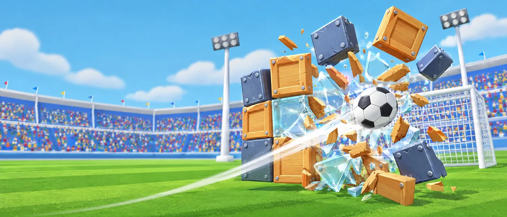
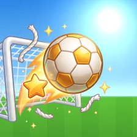

Vuruşu çizmek
Düz ya da kıvrımlı bir çizgi çizebilirsin. Kıvrım topa falso verir ve engellerin etrafından dolaştırır.
Futbol bulmaca oyunu
Vuruşunun yolunu tek parmakla çiz ve seninle kale arasındaki duvarı yık. Her seviyede sınırlı sayıda topun var.
iPhone · Şimdi App Store’da
Android · Şimdi Google Play’de


175ana seviye
7bölüm
75Yık ve Gol seviyesi
Çevrimdışıİnternetsiz oynanır
Nasıl oynanır
Her seviyede seninle kale arasında bir duvar var. Bir vuruş çiz, duvarın nasıl yıkıldığını gör ve gerekirse daha iyi bir yolla yeniden dene.

Düz ya da kıvrımlı bir çizgi çizebilirsin. Kıvrım topa falso verir ve engellerin etrafından dolaştırır.
Duvarlar tahta, tuğla, metal ve camdan yapılır. Malzemeler farklı davrandığı için her duvar farklı bir vuruş ister.
Her seviyede sınırlı sayıda top var, bazen de geçilmesi gereken bir kaleci. Bir seviyeden en fazla üç yıldız alınır; daha iyi bir sonuç için seviyeyi tekrar oynayabilirsin.

Daha fazlası
Android’de 1.1.0, iOS’ta 1.2.1 sürümünden itibaren isteğe bağlı, tek seferlik satın alımlarla reklamları kaldırabilirsin. Reklamlar internet bağlantısı gerektirir.
Goalbreaker SSS
iPhone ve Android için bir futbol bulmaca oyunu. Her seviyede seninle kale arasında bir duvar var: vuruşunu tek parmakla çiz, topu falsoyla engellerin etrafından dolaştır ve duvarı yıkıp golü at.
Yedi bölümde 175 ana seviye var. İkinci mod Yık ve Gol 75 seviyeden oluşuyor; orada dokunarak atış yapıp platformu boşaltıyorsun. Bunların yanında yan yollar, günlük duvar ve haftalık sıralama da var.
Goalbreaker iPhone ve Android için çıktı: App Store’dan ya da Google Play’den indirebilirsin. Haberler ve güncellemeler Instagram’da @goalbreakergame hesabında.
Evet. Seviyeler, açılan eşyalar ve ilerlemen çevrimdışı çalışır. Reklamlar internet bağlantısı gerektirir.
Ödüllü video yalnızca ek yardım ya da oyun içi bir ödül için sen seçtiğinde oynar. 1.0.6 sürümünden itibaren, kazandığın bir seviyenin sonuç ekranından çıkarken tam ekran bir reklam da gelebilir. Bu, kazandığın her beş seviyede en fazla bir kez olur ve bu reklam hiçbir zaman bölümün ortasında çıkmaz. Android’de 1.1.0, iOS’ta 1.2.1 sürümünden itibaren isteğe bağlı, tek seferlik satın alımlarla reklamları kaldırabilirsin. Ayrıntılar Destek sayfasında (İngilizce).
Hayır, oynamak için kayıt olman gerekmez. İlerlemen cihazında saklanır. İsteğe bağlı çevrimiçi sıralama anonim bir oyuncu kimliği ve senin seçtiğin bir takma ad kullanır; ayrıntılar sıralama kurallarında.
Oyun İngilizce ve Türkçe.
Doğukan Saçmaözü’nün Türkiye’deki bağımsız stüdyosu Talvero Games.

Şimdi App Store’da ve Google Play’de
Goalbreaker iPhone ve Android’de ücretsiz indirilir. Reklam içerir; isteğe bağlı, tek seferlik satın alımlarla reklamlar kaldırılabilir.
Goalbreaker’ı, Doğukan Saçmaözü’nün Türkiye’deki bağımsız stüdyosu Talvero Games yapıyor.